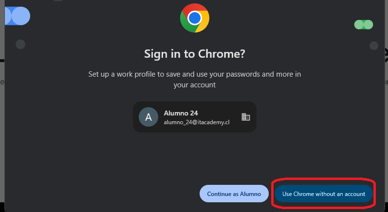
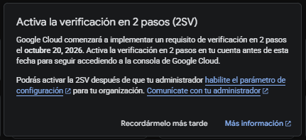

Prueba Tipo
Esta ruta reproduce el flujo validado de la evaluación: preparar el criterio documental, ejecutar el agente, recuperar la ejecución si fuera necesario, verificar los resultados en BigQuery, revisar el informe final y entregarlo en la plataforma del curso.
Acceso a Google Cloud
Antes de comenzar, inicia sesión con la cuenta de alumno asignada para el curso.
Abre https://cloud.google.com/ y selecciona Sign in / Iniciar sesión en la esquina superior derecha. No uses Start free / Comenzar gratis.
- Abre cloud.google.com.
- Haz clic en Sign in / Iniciar sesión, arriba a la derecha. No selecciones Start free / Comenzar gratis.
- Si Google muestra una cuenta distinta, elige Usar otra cuenta.
- Escribe alumno_XX@itacademy.cl con tu número asignado y pulsa Siguiente.
- Escribe Academy.2026 y pulsa Siguiente.
- Si vuelves a la página pública de Google Cloud después de iniciar sesión, haz clic en Consola / Console, arriba a la derecha.
- Si aparece el aviso de Chrome o de verificación en dos pasos, usa la opción para posponerlo y continúa.
- Ya dentro de la consola, confirma que estás en el proyecto del curso antes de seguir.


En algunas pantallas Google Cloud puede mostrar avisos diciendo que faltan permisos, que una API no está habilitada o que una función no está disponible. En el entorno del curso esos mensajes pueden aparecer aunque la acción que necesitas sí funcione.
Si el relator indicó continuar y el recurso abre o la acción se ejecuta, sigue el procedimiento y no cambies IAM, permisos ni APIs por tu cuenta. Si la acción realmente falla y no te deja avanzar, detente en ese punto y consulta al relator.
Las capturas del sitio utilizan alumno-00 como ejemplo visual. En la evaluación debes trabajar únicamente en la carpeta alumno-XX que te haya sido asignada y reemplazar XX en todas las rutas y prompts.
Antes de la prueba: avisos y errores frecuentes de la plataforma
Durante el trabajo pueden aparecer avisos de Chrome, verificación en dos pasos o errores temporales de capacidad. Normalmente basta con posponerlos, cerrarlos o volver a intentar.
- Chrome o verificación en dos pasos: usa “Usar Chrome sin una cuenta” o “Recordármelo más tarde” y continúa.
- 429 / Resource exhausted antes de que el agente ejecute herramientas: vuelve a intentar. Si se repite, refresca la página y prueba nuevamente; si persiste, espera unos minutos y reintenta.
- El agente ejecutó herramientas pero quedó sin respuesta final: no repitas todo. Revisa el paso 07 y continúa desde lo que ya terminó.



Los 11 pasos
06 · Ejecutar agente
Abrir el Analista de Validación Integrada, ejecutar el prompt principal y generar los tres entregables. Los dos prompts de rescate están disponibles inmediatamente debajo del prompt principal.
07 · Recuperar si hace falta
Diagnosticar una interrupción y elegir entre los mismos dos rescates mostrados en el paso 06, sin repetir operaciones ya completadas.
11 · Entrega final
Revisar los archivos, descargar informe_final.md y subir ese informe a la plataforma de evaluación.